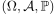
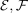
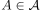
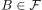
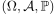
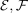
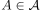
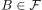

Unabhängigkeit von Unter-Sigma-Algebren
1. Definition
Ein Wahrscheinlichkeitsraum  mit den Unter-sigma-Algebren . Dann nenenn wir unabhängig genau dann wenn für alle  und  A und B unabhängig sind
Ein Wahrscheinlichkeitsraum  mit den Unter-sigma-Algebren . Dann nenenn wir unabhängig genau dann wenn für alle  und  A und B unabhängig sind